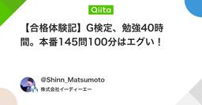
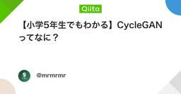
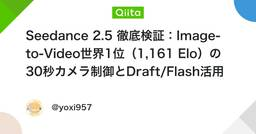

DeepLearningタグが付けられた新着記事 - Qiita
https://qiita.com/tags/deeplearning
DeepLearningに関する情報が集まっています。現在8358件の記事があります。また5172人のユーザーがDeepLearningタグをフォローしています。
フィード

ノイズ除去：技術解説
DeepLearningタグが付けられた新着記事 - Qiita
ノイズ除去：技術解説概要統計的・深層学習的手法でノイズを効果的に除去。詳細このトピックの詳細については、G検定公式教材を参照してください。わかりやすい初心者向け解説はキッズ版の記事をご覧ください。おすすめの学習リソースG検定対策の学習に役立つリ...
6時間前
【小学5年生でもわかる】ノイズ除去（デノイジング）ってなに？
DeepLearningタグが付けられた新着記事 - Qiita
ノイズ除去をわかりやすく解説ざらざらしたノイズが入った画像を、きれいに復元する技術です。より詳しい技術解説は技術版の記事をご覧ください。おすすめの学習リソースG検定対策の学習に役立つリソースを紹介します。書籍『深層学習教科書 ディープラーニング...
14時間前

Kling 4.0 vs Kling 4.0 Flash 徹底比較：10キーフレーム軌道制御・30秒生成上限・2段階クレジット51.4%削減
DeepLearningタグが付けられた新着記事 - Qiita
Lukas Vogel · Applied Research Editor · 公開日 2026-11-27TLDR フルティアのKling 4.0（最長30秒1080p/4K・最大10キーフレーム軌道補間・15アセットOmni Reference）と高速ドラフト向けK...
1日前

決定木：詳細な技術解説
DeepLearningタグが付けられた新着記事 - Qiita
この記事は「技術版」です。初心者向けの説明は別記事をご覧ください。決定木の技術的解説特徴空間を再帰的に分割。分類はジニ不純度、情報利得で分割を決定。回帰は分散削減を基準。ID3、C4.5、CARTアルゴリズムが存在。過学習防止に前剪定・後剪定が必要。ランダムフ...
1日前

【小学5年生でもわかる】決定木ってなに？
DeepLearningタグが付けられた新着記事 - Qiita
この記事は「小学生向け」バージョンです。より詳しい技術的な説明は別記事をご覧ください。決定木ってなに？決定木は、「はい」「いいえ」という質問を次々と重ねて答えを見つける方法です。具体例：果物の見分け「色は赤い？」→ はい → りんご「丸い形？」→ はい → みかん決定木は人間が理解しやすいのが強みです。おすすめの学習リソース決定木を初心者にもわかりやすく学ぶため、このガイドが役立ちます。書籍『深層学習教科書 ディープラーニング G検定 公式テキスト 第2版』（JDLA監修）G検定受験者の定番。シラバスに沿って体系的に学べる公式テキスト。『ディープラーニングG検定 最強の合格テキスト［第2版］』（SBクリエイティブ）最新シラバス完全対応で、章末問題と模擬試験PDF付き。『スッキリわかる ディープラーニングG検定 テキスト&問題演習 第3版』（TAC出版）図解が豊富でわかりやすく、初学者でも取り組みやすい。『ディープラーニングG検定 問題集 第2版』（通称：赤本）実践的な問題演習に特化。新シラバスの範囲もカバー。WebサービスAI検定ドットネットG検定の練習問題を無料で解けるサイト。スキマ
2日前

【文系でも3分で理解】G検定「AI倫理・公平性・バイアス」攻略｜AIは"偏った教科書で学ぶ生徒"で覚える
DeepLearningタグが付けられた新着記事 - Qiita
はじめにこんにちは。2026年1月のG検定に合格した、文系出身のエンジニアです。G検定の法律・倫理分野というと、著作権法や個人情報保護法といった「法律」に目が行きがちです。ところが問題集を解いていて私が何度も落としたのは、**「AI倫理・公平性・バイアス」**の問題でした。「サンプリングバイアスと歴史的バイアスの違いは？」「性別の列を消したのに、なぜ差別が残るの？」――用語は日本語なのに、意外と引っかかるんですよね。この記事では、文系の私が実際に使っていたたとえ話と表で、この分野をサクッと整理します。本記事は個人の受験経験にもとづく非公式のまとめです。JDLA（日本ディープラーニング協会）とは関係ありません。最新の出題範囲は必ずJDLAの公式情報で確認してください。まずは全体像：AIは「偏った教科書」で勉強する生徒私がいちばんしっくりきた覚え方はこれです。AIは、渡された教科書（データ）をそのまま信じる真面目な生徒教科書が偏っていれば、生徒も偏った答えを出します。しかも本人（AI）には悪気がありません。だからこそ「教科書を作る側」「採点する側」の人間が気をつける必要がある――これがAI
2日前

Seedance 2.5徹底解説：Image-to-Video世界1位（1,161 Elo）・30秒カメラ制御・Draftモード68.7%クレジット削減術
DeepLearningタグが付けられた新着記事 - Qiita
Kenji Tanaka · Inference Systems Writer · 公開日 2026-11-26TLDR Artificial AnalysisのImage-to-Videoリーダーボードで世界1位（1,161〜1,162 Elo）を獲得したSeedance 2.5の技術仕様を解剖。480p Draft Modeによる事前カメラ検証と30秒1080p本編レンダリングの2段階パイプラインでクレジット消費を68.7%削減する計算式を解説します。Image-to-Video世界1位（1,161 Elo）の形状保持力と最長30秒の単一軸カメラ制御Dreamina Seedance 2.5は、公開ブラインド評価ベンチマークである Artificial Analysis Image-to-Video Leaderboard（AA-Video-I2V v2.1）において 世界1位（1,161〜1,162 Elo）、Text-to-Video部門でも世界4位（1,156 Elo）を記録しているマルチティア動画生成基盤です。Seedance 2.5 スタジオ内では、最長30秒のネイティブ
2日前

MAGI-2徹底解説：480B MoE単一ストリーム統合音声映像と20リファレンス制御
DeepLearningタグが付けられた新着記事 - Qiita
MAGI-2は、総パラメータ数480B（トークンあたりアクティブ28B）のMixture-of-Experts（MoE）バックボーンを採用し、映像モーション・台詞リップシンク・フォーリー効果音・BGMを単一パスで同時合成する統合型AI動画モデルです。2026年11月の正式公開以降、MAGI-2 の公式ワークスペースではテキスト、開始フレーム、または最大20個のマルチモーダル参照入力から、最長30秒・1080p・25fpsの連続ショットを1回で出力できるようになりました。公開ベンチマークであるArtificial Analysis Video Arena（AA-Video-I2V v2.1）ではElo 1,163（±14）で世界1位を獲得しており、API換算コストも1分あたり$4.80と競合最上位モデルを大きく下回る水準で設計されています。要点まとめ単一ストリーム音声映像統合: 映像生成後に別モデルでダビングや効果音を重ねるのではなく、1回の推論パスで口元の動き・環境音・BGMの位相を同期させます。480B MoE（アクティブ28B）への飛躍: チャンク分割自己回帰の先駆けだったMAGI
3日前

CNN-LSTM入門：気象衛星画像から台風の中心気圧を予測する
DeepLearningタグが付けられた新着記事 - Qiita
CNN-LSTM入門：気象衛星画像から台風の中心気圧を予測するはじめに気象衛星の画像を見ていると、台風の雲がどの方向へ動き、どのように発達しているかが分かります。こうした変化を画像の時系列として学習させれば、数時間先の状態を推定できます。使うのは、画像の特徴を取り出すCNNと、時系列の変化を学習するLSTMを組み合わせたCNN-LSTMです。この記事では、まず台風の赤外衛星画像から6時間先の中心気圧を予測する小さなモデルを作ります。そのうえで、データの取得先や前処理、PyTorchによる学習、評価方法まで整理します。なお、今回の実装が出力するのは中心気圧（hPa）という数値です。未来の雲画像そのものを作るモデルではありません。雲や降水の分布を画像として予測する方法は、後半でConvLSTMと併せて紹介します。1. CNN-LSTMで何を学習するのかCNN（Convolutional Neural Network）は、画像の中にある雲のまとまり、台風の目、渦巻きの形状などを特徴量へ変換します。LSTM（Long Short-Term Memory）は、その特徴量が時間とともにどう変わった
3日前

データ拡張とは？基礎から応用までわかりやすく解説
DeepLearningタグが付けられた新着記事 - Qiita
データ拡張とは既存データを変形・変換して、訓練データを増やす技法。機械学習やディープラーニングを学ぶ際に、非常に重要な概念です。基本的な定義データ拡張（Data Augmentation）は、既存データに変形・変換を加えて訓練サンプルを増やす手法です。画像の回転、テキストの言い換えなどが行われます。詳しい説明と特徴画像データの拡張回転、水平/垂直反転ずらし、ズーム色調変更、ノイズ追加ミックスアップ、カットミックステキストデータの拡張同義語置換句読点削除順序シャッフル（文のプール内）バックトランスレーション時系列データの拡張ノイズ追加時間シフトジャック（スケーリング）分割と結合注意点テスト時には拡張を適用しない対象タスクに適した拡張を選択実装上の注意点強度の調整弱い拡張：元のデータとの類似性を保持強い拡張：より多様だが、セマンティック情報を失う可能性テスト時の拡張テスト時に拡張を使う（Test Time Augmentation）と精度が上がることもあるドメイン固有の拡張医療画像の回転は無意味→ タスク・ドメインに応じた拡張設計G検定での出題傾向データ拡張はG検定の頻出トピックです。シラ
3日前

【小学5年生でもわかる】データ拡張ってなに？
DeepLearningタグが付けられた新着記事 - Qiita
データ拡張ってなに？「限られたデータから、新しいデータを作り出す」方法のこと。かんたんな説明写真を『右に90度回転』『反転』『ちょっと暗くする』などと加工して、同じ写真から新しい写真を作り出すようなものです。日常生活での例え1枚の写真を『回転』『拡大』『色を変える』などで変形させて、元々1枚だったのが5枚に増えるような感じです。もっと詳しく知りたい人へこのテーマについてもっと詳しく学ぶなら、技術版の記事がおすすめです！おすすめの学習リソースデータ拡張をもっと詳しく学ぶなら、下の書籍やWebサービスがおすすめです。書籍『深層学習教科書 ディープラーニング G検定 公式テキスト 第2版』（JDLA監修）G検定受験者の定番。シラバスに沿って体系的に学べる公式テキスト。まずはこの1冊から。『ディープラーニングG検定 最強の合格テキスト［第2版］』（SBクリエイティブ）最新シラバス完全対応で、章末問題と模擬試験PDF付き。公式テキストの補強に。『スッキリわかる ディープラーニングG検定 テキスト&問題演習 第3版』（TAC出版）図解が豊富でわかりやすく、初学者でも取り組みやすい。文系の方にも特に
3日前
ダートマス会議とは？AI誕生の瞬間をわかりやすく解説
DeepLearningタグが付けられた新着記事 - Qiita
はじめにダートマス会議（Dartmouth Summer Research Project on Artificial Intelligence）は、1956年にアメリカのダートマス大学で開催された6週間のワークショップです。この会議は、人工知能という学問分野を正式に誕生させた重要なイベントであり、AI研究の歴史的転換点となりました。定義ダートマス会議：1956年6月から8月、ダートマス大学で開催AIという名称が初めて正式に使用された学術会議人工知能研究の正式な開始を象徴するイベント詳細説明会議の背景開催前の状況：1940年代：コンピュータ理論の誕生（チューリング、フォン・ノイマン）1950年：チューリングが「Computing Machinery and Intelligence」を発表認知科学者たちが「機械による思考は可能か」を真摯に討議開催の動機：複数分野の研究者が協力して、機械知能の可能性を探る年1回ではなく、集中的な6週間の共同研究参加者と彼らの貢献名前所属貢献分野ジョン・マッカーシーMIT関数型プログラミング、AIの父マービン・ミンスキーPrincetonニューラルネット、
3日前

【合格体験記】G検定、勉強40時間。本番145問100分はエグい！
DeepLearningタグが付けられた新着記事 - Qiita
G検定、辛くも合格しました。2026年11月7日の土曜に自宅で受けて、11月24日に結果が来ました。勉強時間は合わせて40時間くらいで、そのうち20時間は公式テキストを1冊読み切るのに使っています。使ったのは公式テキスト、問題集に付いているWebアプリ、Udemyの模擬試験の3つです。で、本番でいちばんきつかったのは、145問を100分で解き続ける時間のなさでした。きっかけは、勉強会で会った方の一言2026年10月2日に、松尾研究所さんの勉強会に行きました。Sansanさん、ABEJAさんとの共同開催で、LLMやVLM、VLAを自社でファインチューニングしている話を聞く会の第2回です。会場はAWSの麻布台オフィスでした。そこで、大学でレーザーを研究して、そのあともレーザーを扱う会社で技術者をしていた、という方とお話ししました。AIにもかなり詳しい方で、G検定とE資格、取ってみるのもいいかもね、と教えてくれたんです。理由はコミュニティでした。合格すると、CDLEという合格者のコミュニティに入れて、Slackにも参加できるそうです。JDLAのCDLEのページにも、合格者だけが入れるコミュニ
3日前

【小学5年生でもわかる】ダートマス会議ってなに？
DeepLearningタグが付けられた新着記事 - Qiita
ダートマス会議とは、1956年にアメリカの大学で開かれた、AI（人工知能）が「正式に誕生した」とも言える会議です。このとき、科学者たちが「機械が人間のように考える？できるんじゃないか！」と考え始めました。それまでは、「機械は決まったことしかできない」と思われていました。でも、この会議で「機械も学ぶことができるのでは？」という新しいアイデアが出てきたんです。この会議がきっかけで、AIの研究が正式に始まりました。だから、AIの歴史はこの会議から始まったと言えるんです。専門的な仕組みや関連技術を詳しく知りたい方はこちら👉 ダートマス会議とは？AI誕生の瞬間をわかりやすく解説おすすめの学習リソースダートマス会議がAIの研究を正式に始めた、大切な会議だったんですね。書籍『深層学習教科書 ディープラーニング G検定 公式テキスト 第2版』（JDLA監修）G検定受験者の定番。シラバスに沿って体系的に学べる公式テキスト。まずはこの1冊から。『ディープラーニングG検定 最強の合格テキスト［第2版］』（SBクリエイティブ）最新シラバス完全対応で、章末問題と模擬試験PDF付き。公式テキストの補強に。『スッキ
4日前

【文系でもできる】G検定の用語ノートはMarkdown＋VS Codeで作る｜「1秒で引ける」カンペの型と検索術
DeepLearningタグが付けられた新着記事 - Qiita
はじめにこんにちは。2026年1月のG検定に合格した、文系出身のエンジニアです。G検定の合格体験記を読み比べていると、最近は「Markdownで用語ノートを作って、エディタの検索で引く」というやり方を紹介している人がちらほらいます。私もExcelのカンペから乗り換えてみて、「これ、文系でも普通にできるし、何より勉強そのものになる」と感じました。この記事では、プログラミングに自信がない人でも真似できるように、Markdown＋VS Codeで「1秒で引ける用語ノート」を作る手順をまとめます。注意: この記事はJDLA（日本ディープラーニング協会）の公式コンテンツではありません。筆者個人の学習経験に基づく非公式の情報共有で、合否を保証するものではありません。受験方式（オンライン／会場）ごとの持ち込み・参照のルールは回によって変わる可能性があるため、必ず受験前に JDLA公式サイト の最新の受験規約をご確認ください。結論：ノートは「1用語＝1ブロック」＋「言い換え」を書く先に結論です。用語は 1用語＝1ブロック の決まった型で書く各ブロックに 略語・英語名・言い換え を入れておく（検索で引っ
4日前

CycleGAN：技術解説
DeepLearningタグが付けられた新着記事 - Qiita
CycleGAN：技術解説概要ペア画像なしで画像領域間の相互変換を学習する非対称的GAN。詳細このトピックの詳細については、G検定公式教材を参照してください。わかりやすい初心者向け解説はキッズ版の記事をご覧ください。おすすめの学習リソースG検定対策の学習に役立つリソースを紹介します。書籍『深層学習教科書 ディープラーニング G検定 公式テキスト 第2版』（JDLA監修）G検定受験者の定番。シラバスに沿って体系的に学べる公式テキスト。まずはこの1冊から。『ディープラーニングG検定 最強の合格テキスト［第2版］』（SBクリエイティブ）最新シラバス完全対応で、章末問題と模擬試験PDF付き。公式テキストの補強に。『スッキリわかる ディープラーニングG検定 テキスト&問題演習 第3版』（TAC出版）図解が豊富でわかりやすく、初学者でも取り組みやすい。文系の方にも特におすすめ。『ディープラーニングG検定 問題集 第2版』（通称：赤本）実践的な問題演習に特化。新シラバスの範囲もカバーしており、仕上げに最適。💡 G検定の書籍は定価だとそこそこしますが、某フリマアプリで中古を探すとかなり安く手に入ります
4日前

【小学5年生でもわかる】CycleGANってなに？
DeepLearningタグが付けられた新着記事 - Qiita
CycleGANをわかりやすく解説ペアなし画像を、別のスタイルに自動変換するGAN。より詳しい技術解説は技術版の記事をご覧ください。おすすめの学習リソースG検定対策の学習に役立つリソースを紹介します。書籍『深層学習教科書 ディープラーニング G検定 公式テキスト 第2版』（JDLA監修）G検定受験者の定番。シラバスに沿って体系的に学べる公式テキスト。まずはこの1冊から。『ディープラーニングG検定 最強の合格テキスト［第2版］』（SBクリエイティブ）最新シラバス完全対応で、章末問題と模擬試験PDF付き。公式テキストの補強に。『スッキリわかる ディープラーニングG検定 テキスト&問題演習 第3版』（TAC出版）図解が豊富でわかりやすく、初学者でも取り組みやすい。文系の方にも特におすすめ。『ディープラーニングG検定 問題集 第2版』（通称：赤本）実践的な問題演習に特化。新シラバスの範囲もカバーしており、仕上げに最適。💡 G検定の書籍は定価だとそこそこしますが、某フリマアプリで中古を探すとかなり安く手に入ります。試験対策の書籍は内容が大きく変わるものでもないので、中古で十分です。Webサービス
4日前

交差検証とは？基礎から応用までわかりやすく解説
DeepLearningタグが付けられた新着記事 - Qiita
交差検証とはデータセットを複数に分割して、モデルの汎化性能を正確に評価する手法。機械学習やディープラーニングを学ぶ際に、非常に重要な概念です。基本的な定義交差検証（Cross Validation）は、データセットを k 個の部分に分割し、k-1 個を訓練、1 個を検証に用いる手法を k 回繰り返します。汎化性能の正確な推定が可能です。詳しい説明と特徴k-fold 交差検証データを k 等分し、k回の検証を行います。メリット：汎化性能の正確な推定全データを活用デメリット：計算量が k 倍時系列データに不向き時系列交差検証時間の順序を保って分割（ウォークフォワード法）Stratified k-foldクラス分布を保つ分割方法（不均衡データに有効）実装上の注意点k の選択一般的に k=5 または 10小規模データセット → k 大大規模 → k 小時系列データランダムな分割は避け、ウォークフォワード法を使用不均衡データStratified k-fold で、各フォールドのクラス分布を保持G検定での出題傾向交差検証はG検定の頻出トピックです。シラバスに明記されており、基本的な理解が問われるこ
4日前
PyTorchのcontiguousメソッドを徹底解説：パフォーマンス向上の秘訣
DeepLearningタグが付けられた新着記事 - Qiita
PyTorchで転置やスライス操作を行った後のテンソルに対して.view()メソッドを実行すると、RuntimeError: view size is not compatible with input tensor's size and strideというエラーが発生します。これはテンソルが非連続化（Non-Contiguous）していることが原因であり、高速な形状変更や外部API連携時に致命的なデータ破損を招きます。何が起きたか（発生した症状と原因）.view()の実行時エラー: 非連続なテンソルに対して.view()を呼び出すと、メモリ上の物理的な並び順と論理順序が一致しないためランタイムエラーが発生する。外部API連携時のデータ破損: NumPyやCUDAカーネルなどの外部システムへ非連続なテンソルを渡すと、サイレントな計算結果の破壊やセグメンテーション違反を引き起こす。原因: transpose()、permute()、スライス操作などにより、論理的な形状は変わらなくてもメモリ上のストライドが変わり、連続性が失われるため。どう解決したか（基本手順とコマンド）非連続なテンソルを
4日前

【PyTorch】PyTorchユーザー必見！『CUDA out of memory』エラーを効率的に解決する対策とGPUメモリ管理のコツ
DeepLearningタグが付けられた新着記事 - Qiita
PyTorchを用いた深層学習の実行中にRuntimeError: CUDA out of memoryが発生する場合、単にモデルの規模が大きいだけでなく、PyTorchの内部キャッシュプールにおけるメモリ断片化や計算グラフの残留が真の原因となっています。何が起きたか（発生した症状と原因）現象: 大規模なモデルの学習やバッチサイズの増加に伴い、GPUのVRAMが枯渇しエラーが発生する。empty_cache()が効かない理由: torch.cuda.empty_cache()は未使用ブロックをOSに返すだけであり、計算グラフ上で参照が残っているテンソルや断片化したメモリは解放されない。メモリ急増の要因: モデルパラメータ、入力データ、およびバックプロパゲーションのために保持される中間アクティベーション（特にReLUやDropoutの前後）が大量のVRAMを消費する。どう解決したか（基本手順とコマンド）OOMエラーを即座に回避するためには、カーネルの再起動やバッチサイズの調整に加え、メモリ消費箇所を正確に特定することが不可欠です。import torch# メモリ消費のブラックボックスを
4日前

【小学5年生でもわかる】交差検証ってなに？
DeepLearningタグが付けられた新着記事 - Qiita
交差検証ってなに？「何度も別の問題で試して、本当に実力があるか確認する」方法のこと。かんたんな説明テスト勉強で、教科書の問題で何度も練習して、最後に別の模試で本当に実力があるか確認する感じです。何度も違う問題で試すから、より正確に実力がわかります。日常生活での例え期末テストの前に、4回の練習テストを別々にやって、『全部で7割以上取れたから、本番も大丈夫だろう』と判断する感じです。もっと詳しく知りたい人へこのテーマについてもっと詳しく学ぶなら、技術版の記事がおすすめです！おすすめの学習リソース交差検証をもっと詳しく学ぶなら、下の書籍やWebサービスがおすすめです。書籍『深層学習教科書 ディープラーニング G検定 公式テキスト 第2版』（JDLA監修）G検定受験者の定番。シラバスに沿って体系的に学べる公式テキスト。まずはこの1冊から。『ディープラーニングG検定 最強の合格テキスト［第2版］』（SBクリエイティブ）最新シラバス完全対応で、章末問題と模擬試験PDF付き。公式テキストの補強に。『スッキリわかる ディープラーニングG検定 テキスト&問題演習 第3版』（TAC出版）図解が豊富でわかり
4日前

交差エントロピー（テック版版）
DeepLearningタグが付けられた新着記事 - Qiita
ひとこと概要：情報理論に基づく分類損失関数。2つの確率分布のKL divergenceを計測します。関連記事： この記事は「テック版」です。キッズ版テック版どちらからでも読み始められます！交差エントロピー（Cross Entropy）は、情報理論に深く根ざした標準的損失です。H(p,q) = -Σ p(x) log q(x) = H(p) + D_KL(p||q)最小化すると、KL divergence（分布間の距離）が最小化されます。最尤推定との等価性により、統計的な正当性があります。数値安定性のため、softmaxとCEを統合したLog-Softmaxを使用します。おすすめの学習リソース【交差エントロピー】を学ぶなら、体系的なテキストで基礎から理解することが大切です。書籍『深層学習教科書 ディープラーニング G検定 公式テキスト 第2版』（JDLA監修）G検定受験者の定番。シラバスに沿って体系的に学べる公式テキスト。まずはこの1冊から。『ディープラーニングG検定 最強の合格テキスト［第2版］』（SBクリエイティブ）最新シラバス完全対応で、章末問題と模擬試験PDF付き。公式テキストの
5日前
【小学5年生でもわかる】交差エントロピーってなに？
DeepLearningタグが付けられた新着記事 - Qiita
ひとこと概要：分類タスク（複数選択肢から1つを選ぶ）に最適な損失関数。確率的な誤差を計測します。関連記事： この記事は「キッズ版」です。キッズ版テック版どちらからでも読み始められます！交差エントロピーは、確率的な「外れ具合」を計測する損失関数です。分類タスクのほぼ標準です。シンプルな例メール分類：「スパム or 正常」モデルの予測：スパムの確率70%、正常30%正解：「スパム」（100%確率）間違いの程度：70%なので完全には間違っていないが、100%じゃないので少し間違い。計算Binary：Loss = -(y*log(p) + (1-y)*log(1-p))確率的な考え方完全に正解：p = 0.99 → Loss = -log(0.99) = 0.01（小さい）少し間違い：p = 0.6 → Loss = -log(0.6) = 0.51（中程度）大間違い：p = 0.05 → Loss = -log(0.05) = 3（大きい）分類タスクでは、ほぼすべてのプロジェクトで使われています。おすすめの学習リソース【交差エントロピー】を学ぶなら、体系的なテキストで基礎から理解することが大
5日前

なぜAttentionは「√d」で割る？コイントスで直感理解！
DeepLearningタグが付けられた新着記事 - Qiita
はじめに大規模言語モデル（LLM）で使用されている Transformer の核心部分として Attention という機構があります。$$Attention(Q, K, V) = Softmax\left(\frac{QK^T}{\sqrt{d}}\right)V$$Attention では特徴量の増加に伴う勾配消失を防ぐために、自身の次元数の平方根（$\sqrt{d}$）でスケーリングを行います。といっても、なんで $\sqrt{d}$ を用いてスケーリングするのかよくわからなかったため、色々調べてみました。その中で「なるほど！」と腑に落ちたので、備忘も兼ねて Attention におけるスケーリングの謎を、「コイントス」の例えを交えながら分かりやすくまとめてみました！もしよかったら、読んでみてもらえると嬉しいです！そもそも Attention とは？Attention Is All You Needで一躍話題となったLLMの心臓部の機構で、文脈の中でどの単語に注目すべきかを計算し、重み付けして情報を取り出す機構です。公式は以下になります。$$Attention(Q, K, V)
6日前

【文系でも3分で理解】G検定「自動運転・ロボティクス」攻略｜自動運転レベルは"運転の主役交代"で覚える
DeepLearningタグが付けられた新着記事 - Qiita
はじめにこんにちは。2026年1月のG検定に合格した、文系出身のエンジニアです。G検定の勉強で、技術の話ではないのに意外と点を落としていたのが 「自動運転」と「ロボティクス」 の分野でした。「レベル3とレベル4、どっちが運転者不要？」「sim2realって何？」と、問題集で同じところを何度も間違えた記憶があります。この記事では、文系の私が 「運転の主役交代」と「ロボットの修行」 のたとえで整理して、ようやく迷わなくなった覚え方を紹介します。注意: この記事はJDLA（日本ディープラーニング協会）の公式コンテンツではありません。筆者個人の学習経験に基づく非公式の情報共有で、合否を保証するものではありません。出題範囲や法制度の最新情報は JDLA公式サイト や関係省庁の発表でご確認ください。結論：自動運転は「誰が主役か」、ロボティクスは「どこで修行するか」先に結論です。自動運転レベル は「運転の主役が人からシステムへ交代していく段階」で覚えるロボティクス は「ロボットがどこで・どうやって修行するか」で覚えるこの2本の軸を持っておくだけで、選択肢の正誤がかなり判断しやすくなりました。自動運転
6日前
論文まとめ：COSMOS POLICY: FINE-TUNING VIDEO MODELS FOR VISUOMOTOR CONTROL AND PLANNING
DeepLearningタグが付けられた新着記事 - Qiita
はじめにICLR 2026から以下の論文[1] M. J. Kim, et. al. Cosmos Policy: Fine-Tuning Video Models for Visuomotor Control and Planning. ICLR 2026arXiv：https://arxiv.org/abs/2601.16163プロジェクトページ：https://research.nvidia.com/labs/dir/cosmos-policy/GitHub：https://github.com/NVlabs/cosmos-policy1. 概要Cosmos Policyは、NVIDIAが開発した動画生成基盤モデル Cosmos-Predict2-2B をロボット制御に応用した研究動画生成モデルの潜在表現にロボットのActionや関節状態、Valueを組み込むことで、Policyの生成, World Model, 価値関数の生成を行うCosmos のTransformerアーキテクチャを変更せず、ロボットのデモンストレーションデータによる再学習だけでこれらを実現している2. 背景
6日前

畳み込み層（Convolutional Layer） Tech版
DeepLearningタグが付けられた新着記事 - Qiita
畳み込み層（Convolutional Layer）詳説概要畳み込み層（Convolutional Layer）は、CNN（Convolutional Neural Network）における重要な概念です。画像処理タスクで広く活用されています。数学的定義基本原理画像処理において、以下の処理を適用します：$$Y = f(W * X + b)$$ここで：$X$：入力$W$：学習可能なパラメータ$b$：バイアス$f$：活性化関数実装上の考慮パフォーマンス最適化計算効率を考慮した実装が重要です：指標値計算複雑性$O(n)$メモリ効率最適化可能並列化GPU対応G検定出題ポイント理論的基礎実装方法応用事例パフォーマンス特性初心者向けの説明は「畳み込み層（Convolutional Layer） - Kids記事」をご覧ください。おすすめの学習リソース【畳み込み層（Convolutional Layer）の詳しい技術解説です。数学的定義と実装方法まで網羅しています】書籍『深層学習教科書 ディープラーニング G検定 公式テキスト 第2版』（JDLA監修）G検定受験者の定番。シラバスに沿って体系的に学べ
7日前

Seedance 2.5 徹底検証：Image-to-Video世界1位（1,161 Elo）の30秒カメラ制御とDraft/Flash活用術
DeepLearningタグが付けられた新着記事 - Qiita
Kenji Tanaka · Inference Systems Writer · Published 2026-11-18TLDR Artificial Analysis Image-to-Video リーダーボードで世界総合第1位（1,161 Elo）を獲得した Seedance 2.5 のカメラ制御性能を検証し、Seedance 2.5 Draft Mode・Flash・フル版の2段階ハイブリッド運用でクレジット消費を68.7%削減する手順を解説します。Image-to-Video 世界第1位（1,161 Elo）の実力と30秒カメラワーク制御Dreamina Seedance 2.5は、最新のArtificial Analysis Image-to-Video リーダーボード（AA-Video-I2V v2.1）において 1,161 Elo で世界第1位（Text-to-Videoでも 1,156 Elo で第4位）を記録しており、承認済みの商品静止画やキャラクターポートレートを一切歪ませることなく最長30秒の音声付き動画へと変換できる2026年現在のリファレンス基準モデルです
7日前

【小学5年生でもわかる】畳み込み層ってなに？
DeepLearningタグが付けられた新着記事 - Qiita
畳み込み層（Convolutional Layer）とは簡単に説明畳み込み層（Convolutional Layer）は、深層学習の画像処理で重要な概念です。どう動くのか視覚的な特徴を段階的に抽出していくプロセスです。わかりやすい例画像認識で「猫か犬か」を判定する場合：最初の層：「毛並み」「目」などの部分を検出中間の層：「頭の形」「四肢」などを認識最後の層：「これは猫だ」と判定重要なポイントシンプルな特徴から複雑な特徴へと段階的に学ぶ各層が異なるレベルの情報を処理する最終的に高精度な認識が可能さらに詳しく知りたい方は、「畳み込み層（Convolutional Layer） - Tech記事」をご覧ください。おすすめの学習リソース【畳み込み層（Convolutional Layer）を子ども向けに分かりやすく解説した記事です。初心者向け学習をお勧めします】書籍『深層学習教科書 ディープラーニング G検定 公式テキスト 第2版』（JDLA監修）G検定受験者の定番。シラバスに沿って体系的に学べる公式テキスト。まずはこの1冊から。『ディープラーニングG検定 最強の合格テキスト［第2版］』（SB
7日前

AdMultiplier Pricing & Credit Economics: 22 Credits/s Video Ad Remixing vs. Reshoots
DeepLearningタグが付けられた新着記事 - Qiita
Kenji Tanaka · Inference Systems Writer · Published 2026-11-18TLDR Calculate the exact unit economics of reference-led video ad multiplication on AdMultiplier. Compare its 22 credits/s (720p) motion-transfer rate across Basic ($0.0124/credit), Pro ($0.0104/credit), and Enterprise ($0.0058/credit) tiers against traditional studio reshoots and raw API generation.22 Credits Per Second at 720p: The Unit Economics of Reference-Led Video Ad ScalingAt a deterministic billing rate of 22 credits per seco
8日前

コンテンツベースフィルタリング：詳細な技術解説
DeepLearningタグが付けられた新着記事 - Qiita
この記事は「技術版」です。初心者向けの説明は別記事をご覧ください。コンテンツベースフィルタリングの技術的解説アイテム特性ベクトルxでプロファイルw学習。スコア: w·x。テキストはTF-IDF、Word Embedding使用。線形回帰で学習。冷始問題に強い。多様性が低い課題。おすすめの学習リソースコンテンツベースフィルタリングの高度な内容を習得するため、複数のリソースの学習を推奨します。書籍『深層学習教科書 ディープラーニング G検定 公式テキスト 第2版』（JDLA監修）G検定受験者の定番。シラバスに沿って体系的に学べる公式テキスト。『ディープラーニングG検定 最強の合格テキスト［第2版］』（SBクリエイティブ）最新シラバス完全対応で、章末問題と模擬試験PDF付き。『スッキリわかる ディープラーニングG検定 テキスト&問題演習 第3版』（TAC出版）図解が豊富でわかりやすく、初学者でも取り組みやすい。『ディープラーニングG検定 問題集 第2版』（通称：赤本）実践的な問題演習に特化。新シラバスの範囲もカバー。WebサービスAI検定ドットネットG検定の練習問題を無料で解けるサイト。スキ
8日前

生成AIのAPIは使っているが、中でニューラルネットワークやTransformerがどう動いているのか、コードで確かめたことがないエンジニアへ。Kerasの開発者が解説する一冊
DeepLearningタグが付けられた新着記事 - Qiita
生成AIのAPIを呼び出して、結果を受け取るところまでは動かせる。ただ、その中でニューラルネットワークやTransformerがどう動いているのかを、自分のコードで確かめたことはあまりない。『Pythonによるディープラーニングと生成AI・LLM』は、Kerasの開発者が、ディープラーニングと生成AIの背後にある概念を、コードファーストで解説した一冊だ。ベストセラー『Deep Learning with Python』が全面的に書き直され、Keras 3、PyTorch、JAXを網羅している。ディープラーニングの基礎と数学を押さえる1章でディープラーニングとは何かを整理し、2章でニューラルネットワークの数学的要素を扱う。3章では、TensorFlow、PyTorch、JAX、Kerasの位置づけを比べる。分類と回帰、機械学習の基礎とワークフロー4章は分類と回帰、5章は機械学習の基礎、6章は機械学習の普遍的なワークフローだ。7章ではKerasを深く理解する。ここまでで、モデルを作って評価する一連の流れを、コードで一通りたどれる。画像、時系列、テキストと、扱う対象を広げる8章以降は、画像分
8日前

【小学5年生でもわかる】コンテンツベースフィルタリングってなに？
DeepLearningタグが付けられた新着記事 - Qiita
この記事は「小学生向け」バージョンです。より詳しい技術的な説明は別記事をご覧ください。コンテンツベースフィルタリングってなに？コンテンツベースフィルタリングは、「あなたが好きな物の特徴を分析して、同じような特徴を持つ物をおすすめする」という方法です。具体例：映画のおすすめ「トムハンクス」が出ている「冒険映画」を好きだったら、トムハンクスが出ている別の冒険映画をおすすめします。おすすめの学習リソースコンテンツベースフィルタリングを初心者にもわかりやすく学ぶため、このガイドが役立ちます。書籍『深層学習教科書 ディープラーニング G検定 公式テキスト 第2版』（JDLA監修）G検定受験者の定番。シラバスに沿って体系的に学べる公式テキスト。『ディープラーニングG検定 最強の合格テキスト［第2版］』（SBクリエイティブ）最新シラバス完全対応で、章末問題と模擬試験PDF付き。『スッキリわかる ディープラーニングG検定 テキスト&問題演習 第3版』（TAC出版）図解が豊富でわかりやすく、初学者でも取り組みやすい。『ディープラーニングG検定 問題集 第2版』（通称：赤本）実践的な問題演習に特化。新シラ
8日前